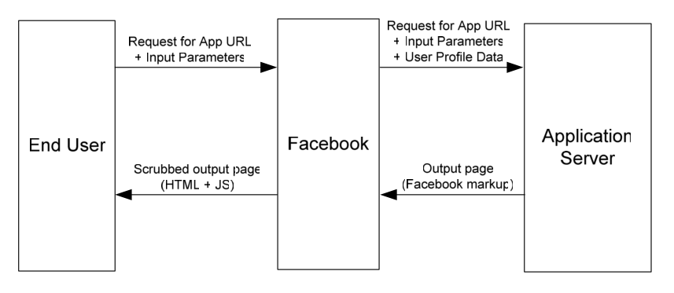
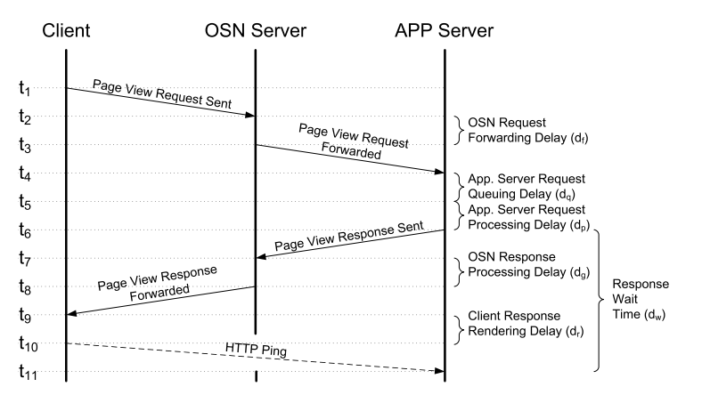

Johdanto
Sosiaalinen media tarkoittaa web-palveluita, joiden avulla käyttäjä voi luoda ja jakaa omaa sisältöään sosiaaliselle verkostolleen. Esimerkkejä tälläisistä palveluista ovat omien kuvien tai videoiden jakaminen, paikkatiedon jakaminen ja tuotteiden tai palveluiden suosittelu. Palveluita on kehitetty myös erityisesti työmaailmaan sopiviksi tehostamaan mm. ryhmätyöskentelyä ja tiedonvälitystä GJW07. Tälläiset palvelut tunnetaan yleisemmin myös lyhenteellä OSN (Online Social Network) PES10.
Palveluissa käyttäjien jakama (tai tuottama) sisältö tunnetaan nimellä User-generated content (UGC). Sisältö muodostuu erilaisista web-objekteista (kuvista, kommenteista, ym.), jotka toimivat palveluiden varsinaisena sisältönä YLM09. Esimerkiksi suuri sosiaalisen median palvelu Facebook tallentaa käyttäjien luomaa sisältöä yli 30 miljardia objektia kuukaudessa Fac10.
Vaikka saman sektorin palveluita on useita, on palveluiden tuottaminen yleensä keskittynyt muutamalle palveluntuottajalle. Koska palveluiden idea perustuu sosiaalisiin verkostoihin, on kilpailijoiden vaikeaa saada tarpeeksi käyttäjiä omaan palveluunsa, jotta se voisi olla kannattava. Suosituimpien web-palveluiden käyttäjämäärät kasvavatkin yleensä varsin nopeasti, sillä palveluita käytetään maailmanlaajuisesti. Käyttäjät käyttävät palveluita myös hyvin aktiivisesti, yleensä jopa päivittäin Gol07.
Tässä artikkelissa tarkistellaan suurten käyttäjämäärien ja objektien tuomia ongelmia arkkitehtuurisella toteutustasolla. Seuraavassa kappaleessa taustoitetaan skaalautumista ja sen haasteita. Sitten tarkastellaan laajemmin Facebookin kokoluokkaa ja käydään läpi Facebookin käyttämiä teknikoita ja arkkitehtuuria.
Tausta
Suuret tietomäärät ja hajautettu arkkitehtuuri asettaa haasteita palvelun suunnittelulle ja toteutukselle. Keskeisiä teemoja ovat skaalautuminen suurille käyttäjämassoille ja tiedon tallentaminen.
Vertikaalinen ja horisontaalinen skaalautuminen
Web-applikaatiot ovat yleensä rakennettu kahden kerroksen arkkitehtuurilla. Ensimmäisessä kerroksessa on applikaatiopalvelin jolla on yhteys toiseen alempaan kerrokseen, eli tietokantapalvelimeen. Applikaatiopalvelin vastaanottaa käyttäjän pyynnön ja muodostaa vasteen käyttäjälle hakemalla tietokantapalvelimelta tarvittavat tiedot PES10.
Kun käyttäjämäärä kasvaa voidaan palvelua pääsääntöisesti skaalata kahdella tavalla: vertikaalisesti ja horisontaalisesti. Vertikaalisessassa skaalauksessa lisätään yksittäisten koneiden suorituskykyä. Tätä voidaan tehdä sekä applikaatiopalvelimissa, että tietokantapalvelimissa. Yksittäisen koneen suorituskyvyn yläraja tulee nopeasti vastaan. Lisäksi kustannukset suhteessa saavutettuun suorituskykyeroon kasvavat huomattavasti PES10.
Horisontaalisessa skaalaamisessa koneiden määrää kasvatetaan. Tällöin myös vikasietoisuus paranee, sillä yksittäisen koneen hajoaminen ei estä palvelun käyttöä. Applikaatiopalvelimien lisääminen on helppoa, sillä ne ovat identtisiä ja toimivat samalla tavalla PES10.
Tietokantapalvelimien lisääminen horisontaalisesti ei yleensä ole mahdollista, sillä useampi palvelin ei voi samanaikaisesti muokata samaa tietosisältöä. Jos tietokannan tietosisältö voidaan jakaa omiin itsenäisiin yksiköihinsä, niin horisontaalinen skaalaaminen on mahdollista näiden yksiköiden määrän verran.
Sosiaalisen median palveluissa tieto mallintaa käyttäjien sosiaalisia verkostoja on tästä syystä vahvasti toisiinsa liittyvää. Tiedon jakaminen osiin on tästä syystä hankalaa Rot09, PES10. Tästä syystä tälläinen tieto yleensä jaetaan hajautuksella samanarvoisiin sirpaleisiin (shards) eri tietokantapalvelimille PES10.
CAP
Eric Brewer on esittänyt vuonna 2000 CAP-konjektuurin Bre02 hajautettujen web-palveluiden kolmesta halutusta ominaisuudesta ja niiden saavutettavuuksista. Kolme haluttua ominaisuutta ovat tiedon konsistenssi, saavutettavuus ja jakaminen (Consistency, Availability, Partitioning).
Hajautetun web-palvelun tietosisältöön kohdistuvat muokkaukset halutaan yleisesti pitää vahvasti konsistentteina. Tämä tarkoittaa ACID-ominaisuudet tyydyttävää tietokantamaista toimintaa, eli esimerkiksi muokkausoperaatioiden suorittaminen siten, ettei muokkauksen kohteena oleva tietosisältö minään hetkenä koostu vanhasta ja uudesta tiedosta. Tämä tiedon atomisuus vaatii esimerkiksi lukitusta, joka on haastavaa toteuttaa hajautetussa ympäristössä GiL02.
Tiedon saatavuus halutaan myös pitää korkeana. Web-palvelua ei käytännössä ole olemassa jos sitä ei voida saavuttaa. Jotta palvelu seliväisi verkkokatkoksista esimerkiksi eri mantereiden välillä, on palvelu ylläpidettävä hajautetusti. Tämä hajautus taas vaikeuttaa tiedon pitämistä konsistenttina GiL02.
Hetkellisen verkkokatkoksen aikana tehdyt päivitykset kahteen palvelinkeskukseen aiheuttavat tiedon synkronointiongelman, kun yhteys jälleen palautuuGiL02. Saman tietosisällön hetkellinenkin jakaminen siten, että kaksi aiempaa haluttua ominaisuutta pysyvät voimassa on Brewerin mukaan mahdotonta. Käytäntö on osoittanut, että vain kahta näistä kolmesta esitellystä omainaisuudesta voidaan pitää samanaikaisesti voimassa Bre02.
BASE
Tietokantojen ACID-mallin rinnalle on hajautettujen web-palveluiden yleistymisen myötä noussut BASE-malli (BAsically available, Soft state, Eventually consistent). Mallissa otetaan huomioon web-palveluiden erityispiirteet, kuten tilattomuus, joka mahdollistaa tiedon tallentamisen kevyimmin ehdoin Pri08.
Ehdottoman saatavuuden (kaikki saatavilla, tai ei mitään saatavilla) sijaan tieto pyritään pitämään saatavilla niin hyvin kuin mahdollista. Palvelu tulee olla rakennettu siten, että jos esimerkiksi 20% tietosisällöstä on hetkellisesti saavuttamattomissa, niin se vaikuttaa vain osaan käyttäjistä. Parhaimmassa tapauksessa suurin osa käyttäjistä ei edes huomaa katkosta. Tämä on mahdollista saavuttaa jakamalla tieto toiminnallisiin kokonaisuuksinsa Pri08.
Web-palveluissa, jotka eivät esimerkiksi käsittele rahaa, voidaan vahvasta transaktionaalisuudesta joustaa. Katkoksen tapahtuminen kriittisellä hetkellä on yleisesti harvinaisia ja luopumalla transaktioista voidaan saavuttaa parempi suorituskyky ja joustavampi arkkitehtuuri. Lisäksi virhetilanteita voidaan välttää esimerkiksi suunnittelemalla operaatiot idempotenttisiksi , eli siten, että operaatio voidaan ajaa useasti peräkkäin ja sen vaiktus tietosisältöön on sama Pri08.
Hetkelliset poikkeamat käyttäjille näkyvässä tietosisällössä voivat hyvinkin olla käytännössä siedettäviä. Esimerkiksi kun käyttäjä jakaa jonkin tiedon kaveriverkostolleen, voidaan tiedon näyttämistä muille viivästyttää useitakin sekunteja. Riittää, että muutoksen tehneelle käyttäjälle annetaan illuusio välittömästä päivittämisestä Pri08.
Facebook.com
Alexa-yhtiön "Top 500 Global Sites" WWW-sivujen suosituimmuuslistauksessa olivat lokakuussa 2010 mm. seuraavat sosiaalisen median palvelut: Facebook.com (2), Youtube.com (3), Linkedin.com (23) ja Flickr.com (36) Ale10. Luvut perustuvat palveluiden omiin ilmoituksiin, joita voitaneen pitää yleisesti luotettavina tai ainakin suuntaa-antavina.
Facebook.com on kirjoitushetkellä ylivoimaisesti suurin sosiaalisen median verkosto, jossa käyttäjät voivat jakaa kuviaan, videoitaan ja vaihtaa viestejä. Seuraavassa on listattu muutamia tunnuslukuja:
- Yli 500 miljoonaa aktiivista käyttäjää
- 50% käyttäjistä kirjautuu palveluun päivittäin
- Käyttäjällä on keskimäärin 130 ystävää, eli henkilöä, jonka tuntee palvelussa.
- Facebook palvelee yli 150 miljoonaa samanaikaista mobiilikäyttäjää.
Lisäksi Facebook tarjoaa myös kehittäjille API-rajapintoja, joiden kautta oma palvelu integroituu käyttäjän kannalta osaksi Facebookkia. Aktiivisia Facebook-sovelluksia on tällä hetkellä 550,000 kappaletta. 70% palvelun käyttäjistä käyttää jotakin sovellusta vähintään kerran kuukaudessa Fac10.
Vuonna 2009 Facebook palveli yli 200 miljardia kuukausittaista sivunäyttöä ja käyttäjistä 70% tuli Yhdysvaltojen ulkopuolelta. Palvelua ajettiin n. 30,000 palvelimella, joista suurin osa oli applikaatiopalvelimia, jotka ajoivat PHP- ja C++-koodia. Palvelimet sijaitsevat kahdessa palvelinkeskuksessa Yhdysvaltojen itä- ja länsirannikoilla Rot09.
Suuri osa palvelun kehittämisen ja skaalaamisen yhteydessä kirjoitetuista komponenteista on julkistettu vapaana lähdekoodina Fac10b, TSA10.
Kuluttajatason laitteet
Facebook tallentaa päivittäin valtavat määrät tietoa, josta muodostetaan mm. palveluun sisältöä käyttäjille, raportteja ja statistiikkaa mainostajille. Facebookin työntekijöiden Thusoo et al. kirjoittamassa artikkelissa "Data Warehousing and Analytics Infrastructure at Facebook" TSA10 kerrotaan päivittäin talletettavan datamäärän ylittävän kirjoitushetkellä 60 teratavua päivässä. Kaikki tieto on pidettävä tallessa ja kokonaistietomäärä ylitti 15 petatavua. Tallennettavan tiedon määrä myös kasvaa jatkuvasti voimakkaasti: 6kk ajanjaksolla päivittäin talletettavan tiedon määrä kolminkertaistui TSA10.
Tälläisen tietomäärän tallentaminen ja hallinta siten, että tietoa voidaan hyödyntää eri käyttötarkoituksiin samalla säilyttäen kustannustehokkuus ja skaalautuvuus asettaa uusia haasteita, joita harvoissa palveluissa on jouduttu ratkaisemaan TSA10. Tärkein vaatimus Facebookin arkkitehtuurin suunnittelussa on skaalautuminen horisontaalisesti käyttäen halpoja kuluttajatason laitteita TSA10, LaM10
ROC-lähde Fox02
Koska palvelu on muodostettu tuhansista palvelimista ja verkkolaitteista, on jokin
Dealing with failures in an in- frastructure comprised of thousands of components is our standard mode of operation; there are always a small but significant number of server and network components that are failing at any given time. As such, the software systems need to be constructed in a manner that treats failures as the norm rather than the exception. LaM10
Eräajot ja prosessoinnin viivästyttäminen
Tietoa tallennetaan viivästetysti siten, että sen tallentaminen ei haittaa arkkitehtuurin muuta toimintaa. WWW-applikaatiopalvelimien tuottama logitieto tallennetaan eräajoina väliaikaiseen tietovarastoon, josta se talletetaan edelleen kahteen päätietovarastoon: tuotantoon ja adhoc-tietovarastoihin. Tuotantotietovarastosta tieto siirretään edelleen MySQL-klusteriin, kun taas adhoc-tietovarastosta kuka tahansa kehittäjä voi ajaa tarvittaessa kyselyitä häiritsemättä tuotantoa TSA10.
Adhoc-tietovarasto on toteuttu Apache Software Foundationin hajautetun laskentajärjestelmän Apache Hadoopin avulla.
TODO: map-reduce, hadoop ja hive
keroo map-reducesta ja hivestä: TSA10
hive-artikkeliFac09a
Eventual consistency, MYSQL repl
Johtuen suuresta välimatkasta palvelinkeskusten välillä, MySQL-tietokanta on jaettu kahtia siten, että tietokannan päivitysoperaatiot tehdään länsirannikon (Kalifornia) palvelinkeskuksessa ja replikoidaan itärannikolle (Virginia). Replikointi valmistuu 20 sekunnin aikaikkunan aikana. Tuon 20 sekunnin aikana tietosisältöä muuttaneen käyttäjän kaikki pyynnöt ohjataan länsirannikolle, jotta tietosisältö on käyttäjän näkökulmasta ehjä Rot09, Sob08
Facebook pystyisi palvelemaan yhdysvaltojen ulkopuolelta tulevia käyttäjiä nopeammin, jos nämä käyttäjät ohjattaisiin palvelinkeskuksiin, jotka olisivat maantieteellisesti lähempänä käyttäjiä. Nykyisellä arkkitehtuurilla Facebook ei voi laajentua enää kolmanteen lokaatioon, eikä ainakaan kauemmaksi yhdysvalloista NSGC09.
Cassandra
Facebookin kehittämä avain-arvo -tietokanta Cassandra mahdollistaa mm. haut palvelussa lähetettyjen yksityisviestien sisällöstä. Tietokantaan voidaan tallettaa jollakin avaimella arvo, esimerkiksi haettaessa viestejä sanojen perusteella sana ja viestin tietokannan tunniste. Cassandra ei tue relaatiomallia ja on täten noSQL tietokanta, jossa API on hyvin yksinkertainen rajoittuen vain insert, get ja delete -operaatioihin. Tällä saavutetaan hyvin nopea applikaatiospesifinen tietokanta, joka ei ole tarkoitettu korvaamaan relaatiotietokantoja, vaan ratkaisemaan tiettyjä rajattuja ongelmia LaM10.
Tietokanta on suunniteltu toimimaan kuluttajatason laitteista muodostetussa klusterissa siten, että järjestelmä ei riipu yhdestäkään tietystä koneesta (no single point of failure, SPOF) ja tietokantaa takaa tiedon tallentumisen viivästettynä (eventual consistency). Klusterissa voi olla useita satoja koneita jaettuna eri palvelinkeskuksiin (data centers) ja tietokannan toimintaa voidaan optimoida ottamaan huomioon eri palvelinkeskukset ja keskuksissa olevien kehikkojen väliset fyysiset etäisyydet. Lisäksi klusteriin voi jatkuvasti liittyä ja poistua uusia koneita automaattisesti LaM10.
Facebookin tämän hetkisessä klusterissa yli 150 konetta, jotka tallentavat 100 TB tietoa Apa10. Tälläisellä määrällä kuluttajatason laitteita klusterissa on jatkuvasti toimimattomia koneita. Cassandrassa tämä on otettu suunnittelun lähtökohdaksi LaM10.
Cassandran lähdekoodi on julkaistu avoimena lähdekoodina vuonna 2008 Apache Software Foundationin alaisuudessa nimellä "Apache Cassandra". Myös muut sosiaalisen median palvelut, kuten Digg, Twitter ja Reddit käyttävät Cassandraa Apa10.
Caching, Välimuisti
Tärkein näkymä käyttäjälle muodostetaan käyttäjän sosiaalisen verkoston viimeaikaisista tapahtumista. Tällöin suuri osa palvelun tietosisällöstä saa jatkuvasti paljon lukuoperaatiota. Applikaatiopalvelimien ja MySQL-tietokannan välissä on suurikokoinen memcached-välimuisti, jossa käytännössä koko tietosisältö on talletettuna RAM-muistiin. Kun tietosisältöä päivitetään, päivitetään samalla myös välimuistin sisältö, jolloin tietokanta välttyy kyselyiltä. Yhteensä välimuistikerros palvelee noin. 120 miljoonaa pyyntöä sekunnissa Rot09.
IO-kutsujen minimointi
Staattisten tiedostojen palveleminen käyttäjille, kuten kuvatiedostojen näyttämien aiheuttaa helposti useita IO-kutsuja. Kuvatiedostoja jaettiin hetkittäin vuonna 2009 jopa 550,000 kappaletta sekunnissa Vaj09. Kuvien jakaminen IO-kutsujen minimointiin on kehitty palvelu nimeltä haystack. Haystack kirjoittaa kuvatiedostot albumeittain yhteen logitiedostoon. Logitiedostosta voidaan hakea kuvadataa hakemiston avulla, joka tallettaa tiedston paikan logissa ym. metatietoa. Ratkaisulla pienennettiin IO-kutsujen määrä n. 10:stä 2-4:n / palveltu kuvatiedosto Vaj09, Rot09.
Viestijonot
TODO: kuva sellasesta funnelista, facebookin webissä tais olla
Laskennan siirtäminen kolmannelle osapuolelle
Facebookin applikaatiot ovat kolmansien osapuolien kehittämiä Facebookin sisällä toimivia ohjelmia, jotka käyttävät Facebookin tarjoamaa ohjelmointirajapintaa. Applikaatiot ovat ylläpidetty Facebookin palvelimien ulkopuolella ja käyttäjä ei koskaan muodosta suoraa yhteyttä näihin palvelimiin, vaan kaikki liikenne kulkee Facebookin palvelimien kautta. Käyttäjä tekemät pyynnöt menevät ensin Facebookille, joka kutsuu applikaatiopalvelinta ja vastaanottaa FBML-muotoisen vastauksen. FBML-muoto käännetään Facebookin palvelimilla HTML:ksi, joka vastaa Facebookin tyylimäärityksiä ja annetaan käyttäjälle. Tämä toiminta on esitelty kuvassa TODO LuB08.

Raskaan applikaatiokohtaisen laskennan tapahtuessa Facebookin ulkopuolella, Facebook ulkoistaa skaalautuvuusongelmat suurimmaksi osaksi applikaation kehittäjille. Facebook voi myös halutessaan laittaa applikaatiolta saamiaan vasteita välimuistiin ja vaikuttaa applikaation näkymiin LuB08
Kommunikoinnin kierrättäminen Facebookin palvelimien kautta tuottaa viiveen jokaiseen sivulataukseen. Viivettä syntyy, kun vaste FBML-vaste käsitellään, HTTP-yhteyksiä luodaan ja ovat vasteen käsittely ja NSGC09.

Farmville, applikaatiot, FBML